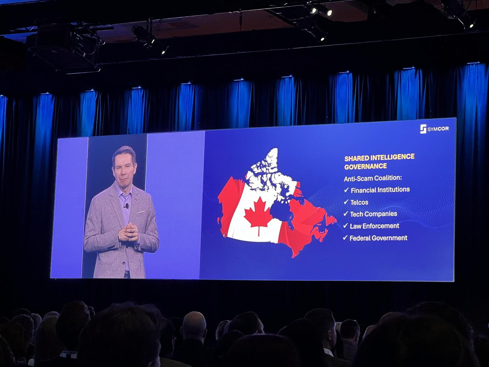

"Why walk the streets and pick pocket wallets when you can do it all from the comfort of your basement couch?"
With this striking opening, Holger Kormann set the tone for a keynote that framed fraud not as a marginal issue, but as a rapidly industrializing threat reshaping the foundations of modern payments. Speaking to an audience navigating the transition toward real-time rails and open banking, Kormann emphasized that innovation in financial services has not occurred in isolation. "As much as we have been working hard, so too have those who would seek to undermine the future."
He described a profound shift in the nature of fraud. What once consisted of small-scale, often unsophisticated schemes has evolved into something far more complex. "Digitization has changed all that. As payments moved online, then to mobile, the speed and scale of transactions created new surfaces for attack. More channels, more anonymity, more organization, increasingly more organized criminal networks." The acceleration of payment systems, he warned, has directly enabled the acceleration of fraud: "The faster money moves, the faster fraud happens."
The tipping point, according to Kormann, has been the arrival of artificial intelligence. "Artificial intelligence is no longer individual, it's industrialized. Fraud rings working and operating like fraud factories. They're working 24/7 using AI for automated account testing, impersonation fraud using deepfake, generating synthetic identities at scale."
He supported this with sobering data: "Last year, the Canadian Anti-Fraud Centre received more than 112,000 reports of fraud involving more than $704 million in reported losses, increasing by 10% from the year before." And, he added, these figures likely represent only a fraction of the real impact.
What makes the challenge particularly acute is the asymmetry between attackers and defenders. "These criminals are sharing tools and strategies and data across borders, while institutions are defending themselves in isolation. And the gap between the two is widening." The consequence is systemic: "Fraud in Canada has not just increased, it has outright exploded. And it is an ecosystem problem. It's not an institutional problem. It is an existential risk to the core survival of our systems."
A Collective "Shared Brain"
Kormann argued that no single organization can address this alone. "No single bank, credit union, credit card provider, payment provider will be able to fight it alone." Instead, he proposed a shift in mindset: "As criminals collaborate, so must we. Fraud is not a competitive space." The limitation of current approaches, he noted, lies in fragmented visibility. "Each just sees a sliver or a slice, a single account, a transaction type, or a moment in time." Meanwhile, fraud operates across institutions, channels, and identities.
The solution, he suggested, is the creation of a "shared brain" — a collective intelligence model capable of identifying, analyzing, and ultimately predicting fraudulent activity. "If we train it together on our shared cross-institutional intelligence, imagine how powerful it becomes."
Drawing on Symcor's experience, Kormann described how this model has already been applied in practice. "We created a consortium in 2018, allowing banks to share, allowing banks to send signals and see beyond their walls." Starting with cheque fraud, the initiative recognized that "checks issued by one bank are very often deposited in another," meaning no single institution can see the full pattern. Through shared intelligence, banks can "detect patterns of suspicious activity emerging across institutions, not just within one." Over time, this has expanded into AI-driven fraud models capable of analyzing "check images, the identity signs, the tampering, the counterfeiting," with alerts delivered in near real time.
Identity: The Last Line of Defense

As payments move into real-time environments, the urgency of this approach increases. "Real-time payments also remove something fraud teams used to rely on — the time between the payment and processing to trace and stop bad actors. That buffer is gone." In this new context, "the only meaningful place to stop fraud is before the payment happens." That moment, he emphasized, is identity. "Once identity is accepted, everything that follows is trusted by default. And once money moves, it's gone, no second chance."
He pointed to growing vulnerabilities in identity systems, noting that "synthetic identities powered by AI pass traditional document checks with ease," and that "nine million Canadians are still giving their banking passwords to apps." In contrast, "when identity is verified directly through secure open banking APIs, everything changes. Trust is no longer assumed, it's established." This leads to a critical conclusion: "Identity is the new safety parameter. It is the last and best moment in time to stop fraud before the money moves."
Kormann stressed that resilience must be embedded from the outset. "We cannot think of fraud resistance as an add-on. When fraud prevention is built in, the results follow." He illustrated the point with a vivid analogy: "Building a new payment system without making it secure is like building a world-class airport and not thinking about security. It might move people faster, but you don't keep the trust for very long."
Four Components of a Collective Defense
To operationalize this vision, he outlined four essential components:
- Shared fraud signals
- Shared detection frameworks
- Shared escalation models
- Shared intelligence governance
He pointed to international examples, noting that "the European Union is making real strides" with Strong Customer Authentication under PSD2, where "two factors of identification… introduce just enough friction to detect and prevent fraud and scam." These shared frameworks "harmonize rules across ecosystems… and create consistency across borders."
The final element, shared escalation, ensures that institutions can "communicate fraud risk across multiple institutions," enabling coordinated responses to emerging threats.
Closing Call to Action

Closing his remarks, Kormann framed the moment as a strategic crossroads for Canada. "We can choose to react to fraud institution by institution, incident by incident, or we can build a collective intelligence model that protects the entire ecosystem and stops fraud before it happens."
The path forward, in his view, is clear: "Move fast because fraudsters are. Modernize collectively because none of us can solve it alone. And serve with trust through safety, not just speed."
If Canada succeeds, he concluded, it will not only achieve modern payments, but "a risk-resilient payments and open finance" system — one capable of sustaining trust in an increasingly complex digital economy.
Key Takeaways
- Fraud has industrialized: AI-powered "fraud factories" run 24/7 using deepfakes, synthetic identities, and automated account testing.
- 112,000+ fraud reports and $704M+ in losses in Canada last year (CAFC) — up 10% YoY.
- 9 million Canadians are still sharing banking passwords with third-party apps.
- Symcor launched a fraud-sharing consortium in 2018, starting with cheque fraud.
- Real-time payments eliminate the "buffer" between payment and processing — identity verification is now the only viable stopping point.
- Four pillars: shared signals, shared detection, shared escalation, shared governance.